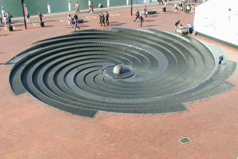
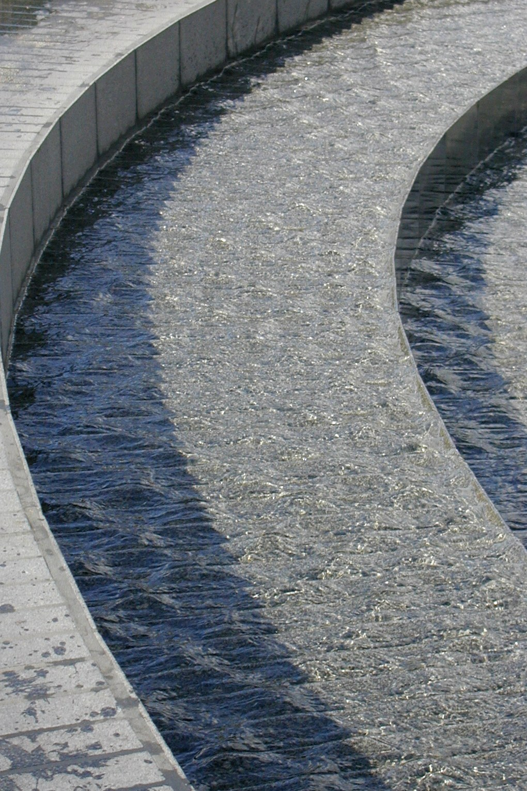
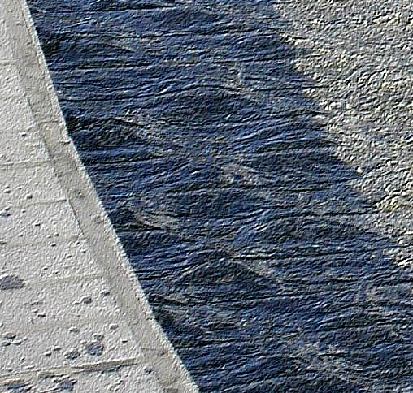
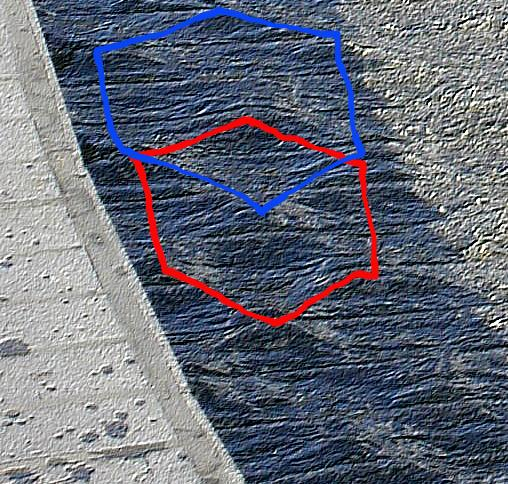
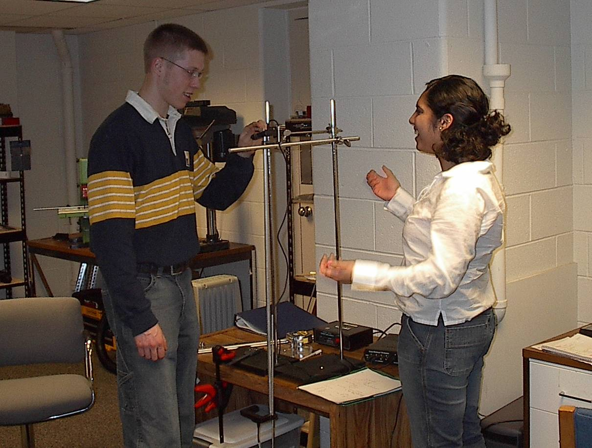

|  |
Math 267 - Perspectives on Mathematics
|
 |
|  |
Math 267 - Perspectives on Mathematics
|
|
Instructor:
Prof. L. F. Rossi with a little help from the Department of Mathematical Sciences and all its friends.
Email:
rossi@math.udel.edu
Phone:
(302) 831-1880 or UDel x1880
Meetings: Thursday 11:15-12:05 in MEM 107.




Course topics may include some of the following:| Date |
Visitor
and affiliation |
| Feb 12 |
Prof. L. Rossi, UDel
Mathematical Sciences. |
| Feb 19 |
Prof. Rich Braun, UDel Mathematical Sciences. |
| Feb 26 |
Dr. Chuck Biehl, Charter School
of Wilmington |
| Mar 4 |
Prof. David Edwards, UDel
Mathematical Sciences |
| Mar 11 |
Mr. Bob Ronkese, UDel
Mathematical Sciences |
| Mar 18 |
Prof. Tobin Driscoll, UDel
Mathematical Sciences |
| Apr 1 |
Dr. David Roselle, President of the University of Delaware and Professor of Mathematics |
| Apr 8 |
William Simpson, UDel Morrison
Library |
| Apr 22 |
Prof. John Pelesko, UDel Mathematical Sciences |
| Apr 29 |
Prof. Fiora Cakoni, Prof. Pam
Cook, Prof. Mary Ann Huntley, UDel Mathematical Sciences. |
| May 6 |
Prof. Stephen Bernhardt, UDel
English Department |
| May 13 |
Eli Faulkner, Quantum Leap
Technologies, Math Dept. alumni. |
 Last modified:
25 Feb 2004.
Last modified:
25 Feb 2004.
{kind=link}